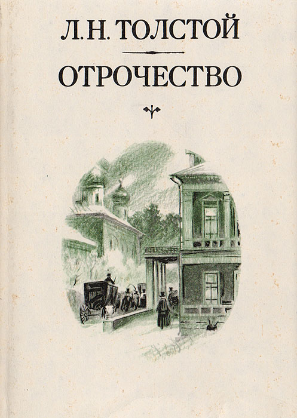

Детство и юность
Ясной поляне



и
«Юности»
Происходил из дворянского рода, известного, по легендарным источникам , с 1351 года. Его предок по отцовской линии, граф Пётр Андреевич Толстой, известен своей ролью в следствии над царевичем Алексеем Петровичем, за что был поставлен во главе Тайной канцеляри. Черты правнука Петра Андреевича, Ильи Андреевича, даны в «Войне и мире» добродушнейшему, непрактичному старому графу Ростову. ын Ильи Андреевича, Николай Ильич Толстой (1794—1837), был отцом Льва Николаевича. Некоторыми свойствами характера и фактами биографии он был похож на отца Николеньки в «Детстве» и «Отрочестве» и отчасти на Николая Ростова в «Войне и мире». Однако в реальной жизни Николай Ильич отличался от Николая Ростова не только хорошим образованием, но и убеждениями, которые не позволяли служить при Николае. Участник заграничного похода русской армии против Наполеона, в том числе участвовал в «битве народов» у Лейпцига и побывал в плену у французов, но смог сбежать, после заключения мира вышел в отставку в чине подполковника Павлоградского гусарского полка. Вскоре после отставки вынужден был пойти на чиновничью службу, чтобы не оказаться в долговой тюрьме из-за долгов отца, казанского губернатора, умершего под следствием за служебные злоупотребления. Отрицательный пример отца помог выработать Николаю Ильичу свой жизненный идеал — частная независимая жизнь с семейными радостями[8]. Чтобы привести свои расстроенные дела в порядок, Николай Ильич, как и Николай Ростов, женился на уже не очень молодой княжне из родаВолконских; брак был счастливый. У них было четыре сына: Николай, Сергей, Дмитрий, Лев и дочь Мария.
Дед Толстого по матери, екатерининский генерал, Николай Сергеевич Волконский, имел некоторое сходство с суровымригористом — старым князем Болконским в «Войне и мире»[9]. Мать Льва Николаевича, похожая в некоторых отношениях на изображённую в «Войне и мире» княжну Марью, владела замечательным даром рассказа.
Кроме Волконских, Л. Н. Толстой состоял в близком родстве с некоторыми другими аристократическими родами: князьямиГорчаковыми, Трубецкими и другими.